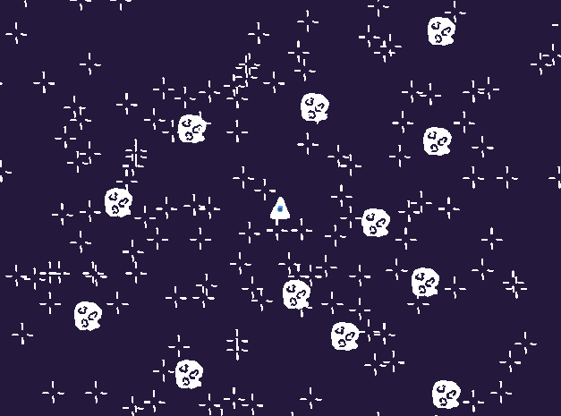

Movimento e equilíbrio
Leitura
Capítulo 1 “Defining Game Feel” em SWINK, S. Game Feel: A Game Designer’s Guide to Virtual Sensation. 1 edition ed. Amsterdam ; Boston: CRC Press, 2008.
Na aula de hoje, vamos discutir o conceito de game feel, proposto por Steve Swink, para compreender mais a fundo as maneiras com que movimento e equilíbrio se relacionam em jogos digitais. Esse conceito é particularmente relevante pois se aplica a um grande número de jogos que envolvem movimento em espaços simulados, assim como nos ajuda a entender as consequências e decisões estéticas e de game design envolvidas em sua criação.
Exemplo Desviaroid

Neste exemplo (link para download de uma build), vamos ver como 3 diferentes esquemas de movimento e input criam sensações próprias num jogo simples (use as teclas 1, 2 e 3 para mudar o esquema de controle e movimento). Assim, podemos ver mais facilmente seu impacto no equilíbrio do jogo em outras áreas como dificuldade ou level design.